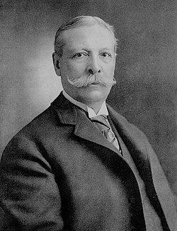
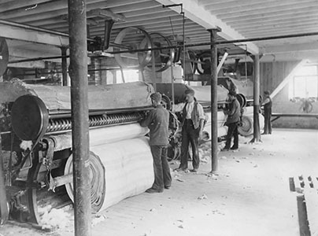
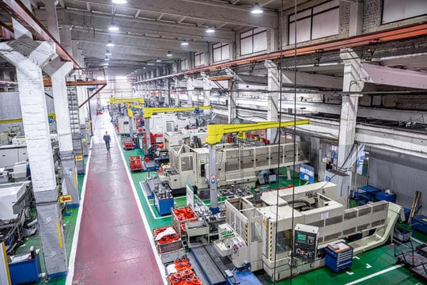

About Widgets Inc.

Who we are today
Widgets Inc. is a fifth-generation, family-owned manufacturer of precision small parts. From our original riverside mill in Muskrat Falls, we now serve aerospace labs, robotics start-ups, restoration hobbyists and Fortune 500 OEMs in thirty-two countries. Every component we ship—whether it’s a single brass widget or a thousand stainless doohickeys—meets the same ±0.0005" tolerance that made our name in 1873.
- ISO 9001:2015 certified, ITAR registered
- 30,000+ standard parts in stock, same-day shipping
- Custom CNC work in 24 hrs, no minimum order
- 100 % renewable-energy mill since 2018
Our story
Founded in 1873 by locomotive machinist Cornelius T. Widget, the company began in a converted grain mill on the Muskrat River. Cornelius hand-filed the first brass widgets for nearby saw-mills and quickly earned a reputation for precision that spread along the expanding railroad lines.

By 1895 we had patented the self-aligning doohickey, keeping steam-powered line-shafts running true from Boston to Bombay. Three wars, one flood and a lightning fire later, we rebuilt every time on the same stone foundation—adding new lathes, new ideas and new generations of the Widget family.
What hasn’t changed is Cornelius’s rule: “If it isn’t measured to the thousandth, it isn’t a Widget.” Today that ethic lives on in our five-axis CNC cells, our in-house metrology lab and our apprenticeship program that has trained over 200 toolmakers.

Mission & values
We exist to keep the world’s machines moving—smoothly, precisely and responsibly. That means fair wages for machinists, carbon-neutral production by 2030, and open-source specs so tomorrow’s inventors can build on today’s parts.
Plan a visit
Tours run daily at 10 a.m. and 2 p.m. See the 1890 treadle lathe that started it all, browse the patent wall and leave with a free commemorative brass widget—still within tolerance, still spinning smoothly.